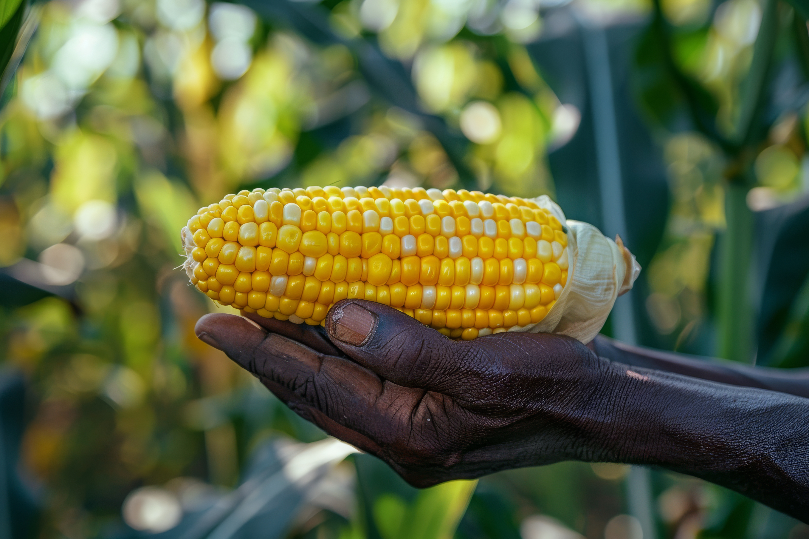

Premium Tanzanian Cashew Nuts
High KOR • Strong Flavor • Trusted Worldwide
About Tanzanian Cashew Nuts
Tanzania is among the world’s most respected producers of premium Raw Cashew Nuts (RCN), known for exceptional Kernel Outturn Ratio (KOR), strong nut count, and distinctive natural flavor.
CropLink sources cashews from the southern belt, the heart of Tanzanian production, where ideal soil, sunlight, and climatic conditions produce nuts of consistently high quality.
- High KOR (48–54 region dependent)
- Low moisture, export-standard drying
- Clean, natural cultivation
- Strong nut counts (W160–W320)
- Distinctive sweetness & creamy flavor

Why Tanzania’s Cashew Quality is Superior

Harvest Seasons & Availability
Main Harvest Season: Tanzania
- November – January (Peak harvest)
- February – March (Late harvest)
Best Buying Window: December – February (optimal volume, quality, and pricing)
Availability Calendar
Global Demand & Market Trends
- India
- Vietnam
- China
- UAE
- Turkey
- Europe (Netherlands, Germany, UK)
- USA (for kernels)
Trends driving demand:
- Growth in healthy snack markets
- Increased processing capacity in India & Vietnam
- Rising demand for premium kernel grades
- Expansion of artisanal nut packaging brands
- Growth in Middle Eastern snack & confectionery sectors
Growing Regions & Origin Map
The finest cashews come from Tanzania’s southern belt:
Primary Regions
- Mtwara
- Lindi
- Tandahimba
- Newala
- Ruangwa
- Kilwa
Secondary Regions
- Tanga
- Coast Region
- Ruvuma

Quality Specifications & Grading
- KOR: 48–54 lbs
- Nut Count: 170–200 per kg
- Moisture: ≤ 10%
- Foreign Matter (FM): ≤ 2%
- Defective Nuts: ≤ 8%
- Admixture: ≤ 1%
Cashew Kernels (if required): W160, W180, W210, W240, W320 (most demanded globally)
How CropLink Supports Buyers
- Verified sourcing from AMCOS, processors & warehouses
- Pre-purchase samples & QC updates
- Real-time videos & photos of lots
- Accurate moisture, nut count & KOR reporting
- Supervision of bagging, stacking & weighing
- Loading inspection with photos, videos & seal numbers
- Full documentation set (Invoice, PL, COO, Fumigation, Phyto, PSI)
- Transparent communication throughout
Typical Shipment & Packaging Options
- 80 kg jute bags (standard)
- 50 kg bags (on request)
- Jumbo bags (corporate buyers)
Container Capacities: 1×20 ft – 18–19 MT, 1×40 ft – 26–27 MT
Shipment Types: FCL, Multi-container contracts, Seasonal sourcing contracts